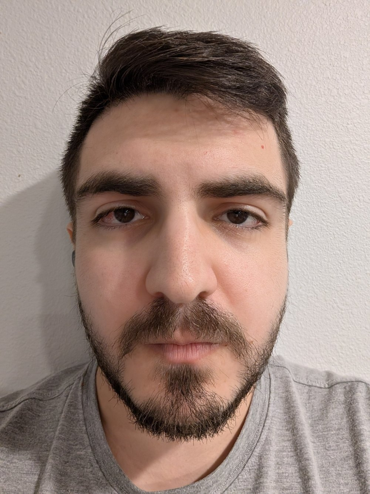
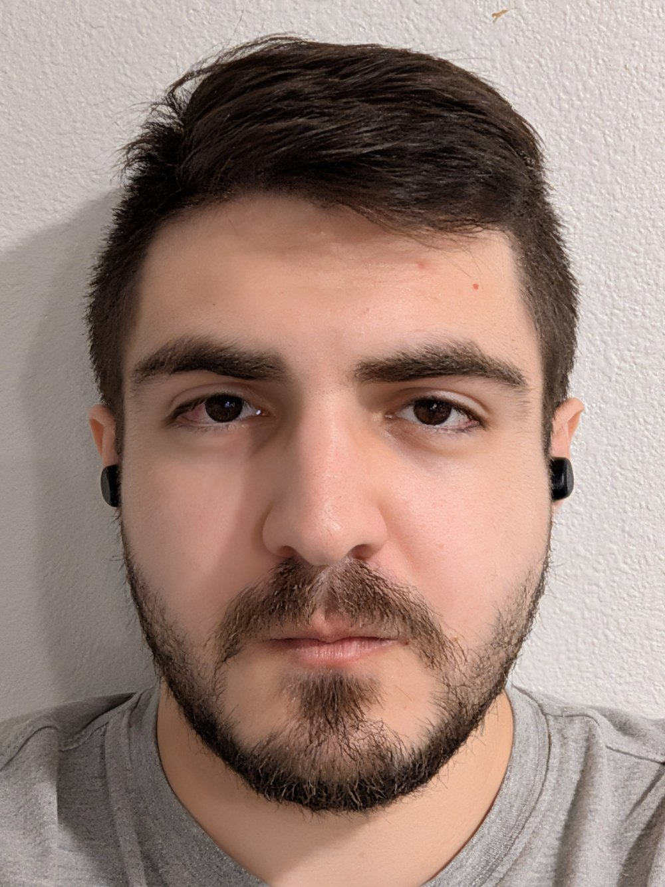
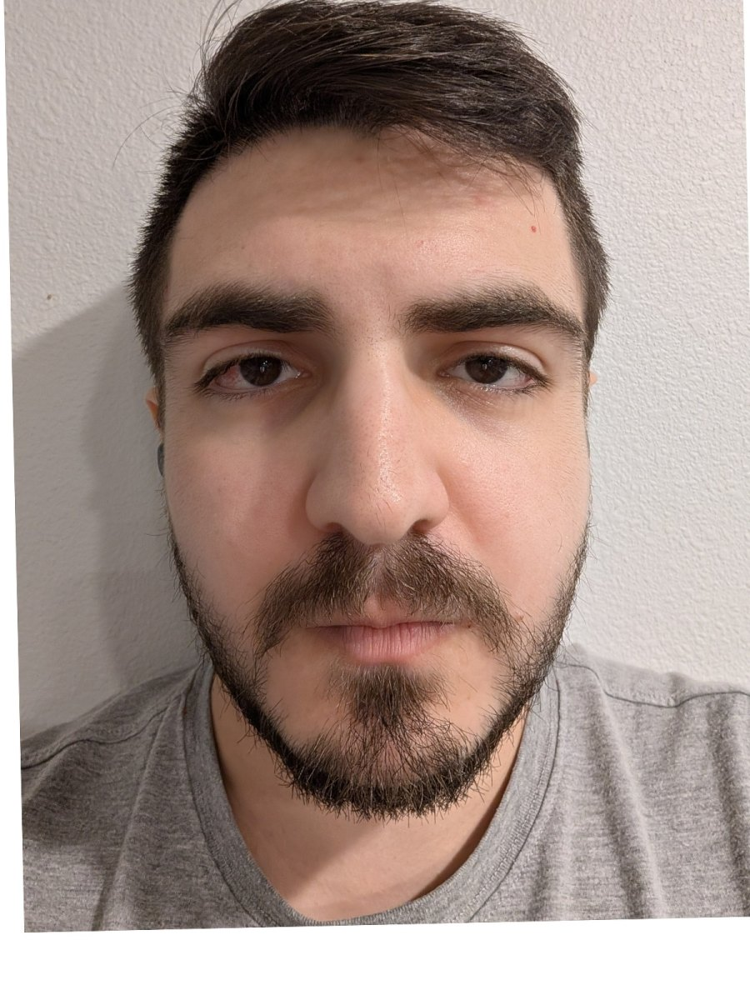
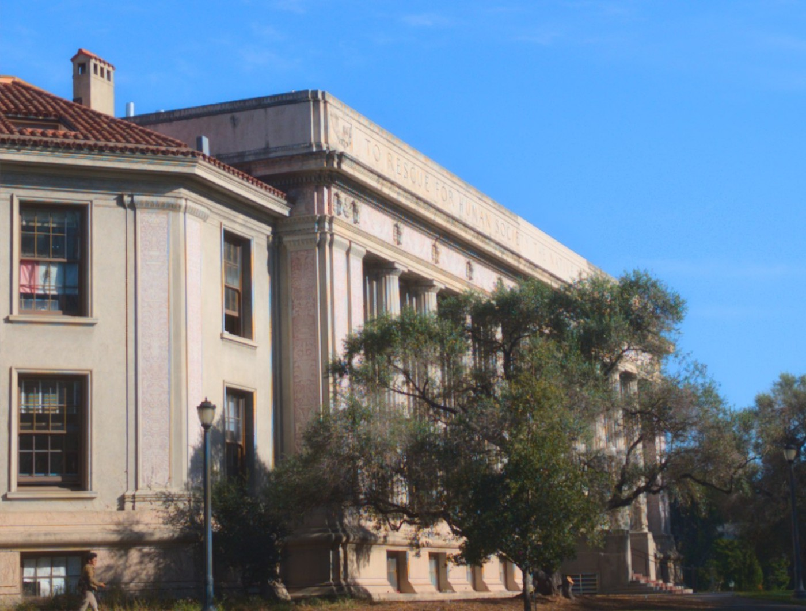
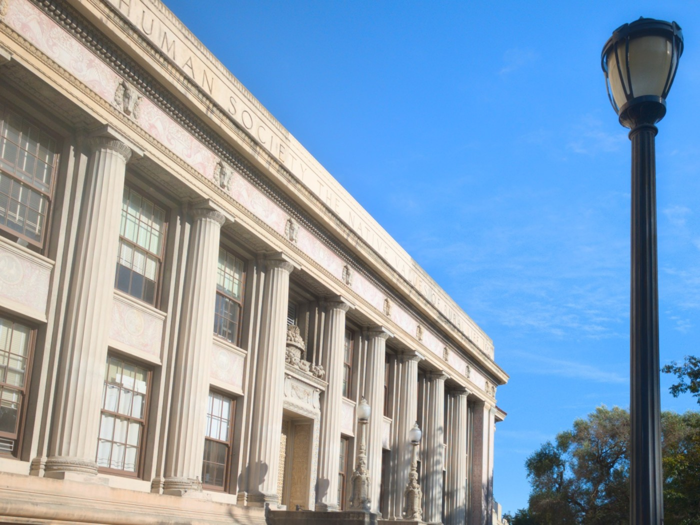
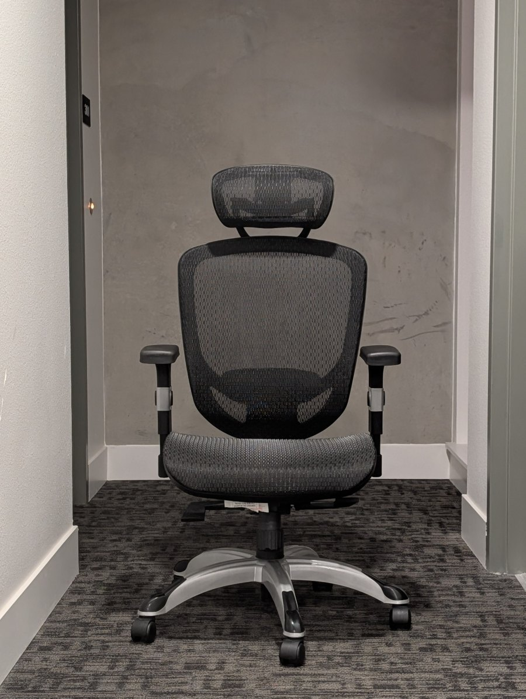
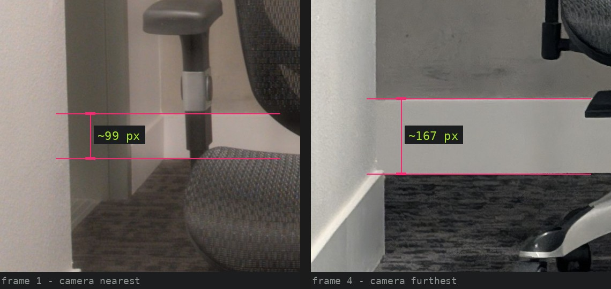

Becoming Friends with Your Camera
Three exercises with one idea underneath them: a photograph's size is set by the lens, but its shape is set by where you stand.
Zoom multiplies every point by the same number, so it can enlarge a picture without rearranging it. Walking changes the distance to each part of the scene by a different fraction, and that is what can bend a face, flatten a facade, or make a corridor breathe.
All photographs are mine, shot handheld on a Google Pixel 10; the ratios are measured off the pixels and rounded honestly. EXIF was stripped in transit, so no focal lengths are quoted.
Perspective starts with distance
A pinhole camera takes a point sitting at distance Z in front of the lens, offset X sideways, and paints it on the sensor at:
f is focal length (zoom); Z is the distance to that particular point.
Two knobs. Turning f multiplies every point by the same constant — the picture gets bigger, but nothing inside it changes shape. Changing Z is different, because Z is not one number: a face has a nose at one distance, eyes at another, ears at a third.
Near things shrink relative to far ones as you step back. As Δ → ∞, the ratio tends to 1 and depth stops being drawn.
Part 1 runs that on a face, Part 2 on a building, and Part 3 on a corridor — with the zoom cancelling the size change so only the shape change survives.
Same face, two standing distances
An ordinary arm's-length selfie, then a second frame taken from across the room with the zoom pushed in until the head filled the same amount of frame. The faces come out matched in size to about 3%, so whatever still differs between them is perspective and nothing else.


To make the difference literal, both frames were rotated and scaled so the pupils land on identical pixels. The eyes are now pinned and cannot move; everything that still shifts is depth being drawn differently.


Why the close one looks wrong
Put the eye plane at distance Z. The nose tip stands about Δ ≈ 2 cm in front of it, so it is drawn larger than the eyes by Z / (Z − Δ):
Z = 0.35 m → 0.35 / 0.33 = 1.06 6% too big — the selfie look
Z = 1.50 m → 1.50 / 1.48 = 1.013 1.3% — a portrait
Z = 3.00 m → 3.00 / 2.98 = 1.007 0.7% — flatThe focal length never appears in that expression. A 2 cm nose is worth 6% of the trip to the lens at arm's length and almost nothing from three metres. Run it the other way for the ears, which sit behind the eye plane: up close they are drawn smaller and disappear behind the cheeks.
Measured on my two frames, with every length divided by the pupil-to-pupil distance so image scale cancels out:
| Length ÷ interocular | Close | Far | Change |
|---|---|---|---|
| nose base width | 0.48 | 0.46 | ≈ +4% |
| mouth width | 0.84 | 0.81 | ≈ +4% |
| eye width (control) | 0.386 | 0.385 | +0.3% |
| brow-to-brow span (control) | 1.869 | 1.868 | +0.0% |
The bottom two rows are the control: they lie in the same plane as the ruler they are divided by, so no amount of walking can touch them — and they don't move. The nose and lips stand a couple of centimetres in front of that plane and grow by about 4%, which is the predicted 6%-ish as closely as a handheld phone deserves.
A building goes flat when you step back
Part 1 walked in and watched a face bulge. Part 2 walks out and watches a building go flat. A facade seen at an angle has a near corner at Z and a far corner at Z + d, so the two ends of one wall are drawn in the ratio:
d = 30 m, Z = 6 m → 6.0× the wall dives away from you
d = 30 m, Z = 60 m → 1.5× bays nearly equal — flatNote what is missing on the right-hand side: focal length. Zooming from 60 m cannot undo the flattening, because the flattening was never about framing — it is the ratio 1 + d/Z, and only your feet can change that. Long lenses do not compress anything; standing far away does, and a long lens is simply what you reach for once you are far away.


The ornaments set into the frieze are evenly spaced on the real building, which makes them a ruler lying along the wall. In the close frame the first gap between them is drawn roughly two and a half times wider than the last one still measurable down the colonnade. In the frame shot from across the plaza the same run varies by only about a third. Both numbers are just 1 + d/Z with a different Z underneath them.
Same building, same size in frame, opposite feeling — and the only thing that changed between the two exposures was how many metres of pavement were behind me. It is why a portrait is shot from across the room and an estate agent shoots a bedroom from the doorway with a wide lens: the photographer picks Z first, then picks a focal length to get the framing back.
The chair stays still; the corridor breathes
An office chair in a dead-end corridor, photographed four times: step back, zoom in, keep the chair the same size. Hold the subject fixed and the room behind it has no choice but to move.





Fig. 3.2. The same four frames laid out in order. Follow the door frame on the left and the skirting board behind the seat: both march outward while the chair holds still.
Why the room swells
Holding the subject means holding f / Z constant, so focal length has to track distance: f ∝ Z. A wall a further b behind the subject is then drawn at:
Z = 1·b → 1/2 = 0.50 standing close: wall is drawn small
Z = 3·b → 3/4 = 0.75
Z = 10·b → 10/11 = 0.91 standing far: it catches up
Z → ∞ → 1.00 no depth leftThat climbs as Z grows. Walk backwards and the wall comes with you; walk in and it flees. Nothing in the room moved and the chair never changed size, which is exactly why the shot is unsettling — the picture reports two incompatible things about where you are standing. Hitchcock's crew shot it down a stairwell in Vertigo; I shot it down a corridor at a chair.
What the frames measure
Zooming by eye between shots is imprecise, so the chair drifted about 30% larger by the last frame. Cropping fixes it — a crop can only ever enlarge a subject, so the frame with the biggest chair is left untouched and the others are cropped up to meet it. Background magnification is then read off the skirting board on the back wall, a fixed object lying in the wall plane.
| Frame | Chair, as shot | Zoom applied in post | Frame kept | Background |
|---|---|---|---|---|
| 1 — nearest | 1.00× | 1.32× | 76% | 1.0× |
| 2 | 1.20× | 1.10× | 91% | ≈ 1.3× |
| 3 | 1.15× | 1.15× | 87% | ≈ 1.55× |
| 4 — furthest | 1.32× | 1.00× | 100% | ≈ 1.7× |


Printed to PDF, the two loops freeze on their first frame; Fig. 3.2 carries the same information without animation.
Pipeline
chair correlate a headrest + backrest patch across a sweep of scales;
crop each frame to the implied window and resample to 1928×2560
(Lanczos). Re-running the match returns 1.000.
background read skirting-board height twice per frame, one column band left
of the chair and one right. They agree to about 1%.
faces fit 68-point landmarks, use a similarity transform to pin pupils,
and divide every length by the interocular distance.
colour animations only: match each frame to a common mean/σ over the chair.
Stills are cropped, never retouched.